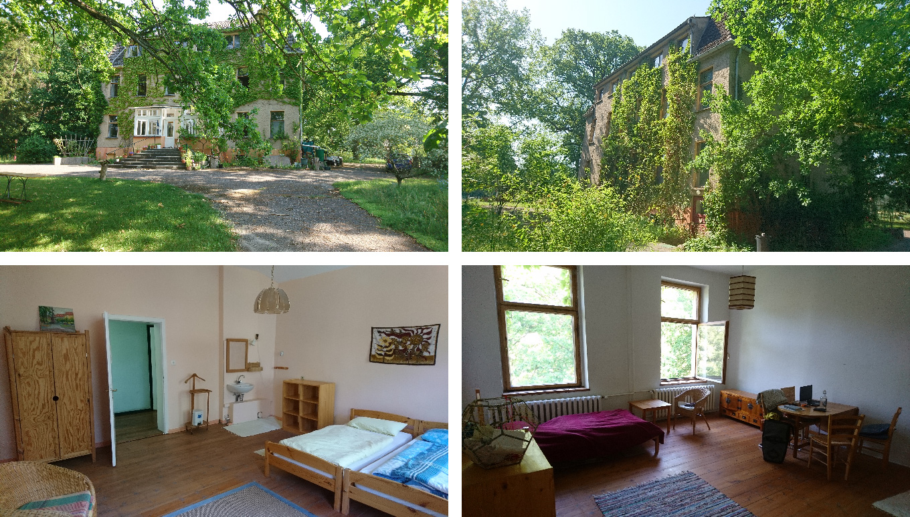

Sozialtherapeutische Gemeinschaft MYSA e.V.
Im Haus Altthymen entsteht mit MYSA ein inklusives, selbstbestimmtes Wohn- und Arbeitsfeld für Menschen mit Beeinträchtigung. Das Haus Altthymen befindet sich in der Gemeinde Altthymen, wenige Kilometer entfernt von Fürstenberg an der Havel im nördlichen Brandenburg.
An diesem idylischen Ort bietet MYSA Menschen mit Assitenzbedarf und herausforderndem Verhalten ein ländliches Wohnumfeld mit sinnstiftenden Betätigungen, die eine selbstbestimmte Lebensführung ermöglichen.
MYSA Fachkonzept lesen...
Spendenkonto
IBANDE61430609671239741200
BICGENODEM1GLS
Kontakt
MYSA e.V.
Alttymener Dorfstraße 18,
16798 Fürstenberg
VR 5265 NP Amtsgericht Neuruppin
Vorstand: Michael Donner, Stefan Thon